Da semente à colheita, cada escolha molda o amanhã.
Conheça o agro que cuida da terra enquanto alimenta o mundo.
O agronegócio brasileiro é um dos mais eficientes e inovadores do mundo. Mas eficiência sem responsabilidade não constrói futuro. Por isso, o Agrinho 2026 convida jovens, produtores e comunidades a repensar como cultivamos — com tecnologia, respeito ao meio ambiente e compromisso com as próximas gerações.
Cada hectare preservado, cada gota d'água economizada, cada energia limpa gerada no campo é um passo rumo ao Brasil que queremos: produtivo e sustentável.
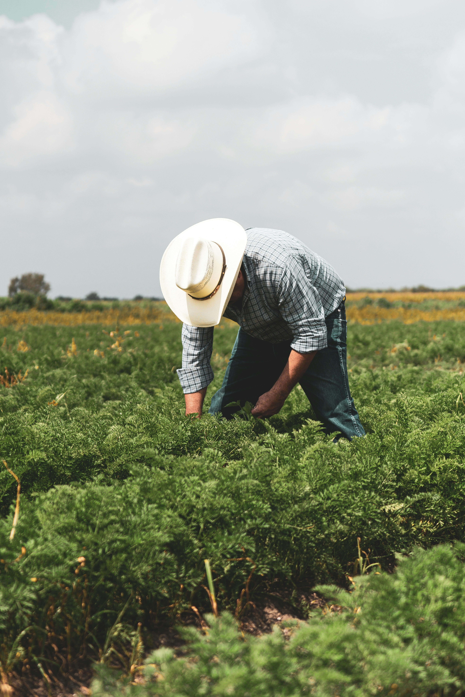
O tema do Agrinho 2026 une duas ideias que parecem opostas, mas são complementares: a força produtiva do campo e o cuidado com o planeta. Entenda cada parte:
O Brasil é uma potência agrícola global. Somos o maior exportador mundial de soja, carne bovina, café e suco de laranja. Em 2025, o agronegócio respondeu por 25% do PIB nacional (Cepea/CNA), gerando empregos e renda do campo às cidades.
"Agro forte" significa um setor produtivo, tecnológico e competitivo — que usa ciência, inovação e gestão para produzir cada vez mais com cada vez menos recursos.
Sustentabilidade no campo significa produzir alimentos sem destruir os recursos naturais que tornam essa produção possível: o solo fértil, a água limpa, o ar puro e a biodiversidade.
Um futuro sustentável é aquele em que as próximas gerações também poderão plantar, colher e se alimentar — porque cuidamos hoje do que a natureza nos oferece.
Durante décadas, acreditou-se que produzir mais exigia degradar a natureza. O Brasil provou o contrário: com o Código Florestal, o plantio direto e a agricultura de precisão, é possível ser o maior produtor de alimentos do mundo e ainda preservar 66% do território com vegetação nativa.
Agro forte é futuro sustentável — um depende do outro.
Os jovens de hoje serão os produtores, pesquisadores, gestores e consumidores do agro de amanhã. Conhecer o tema, questionar práticas antigas e propor soluções inovadoras é o primeiro passo para um campo mais justo e sustentável.
O Agrinho existe exatamente para isso: conectar a escola com o campo e o campo com o futuro.
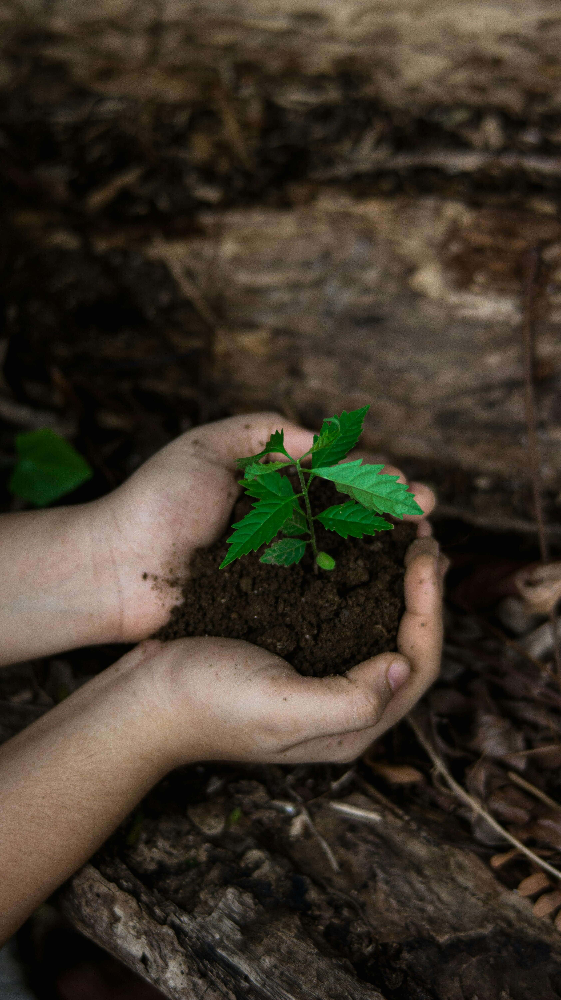
O Brasil cultiva mais de 81,7 milhões de hectares com plantio direto — técnica que preserva o solo, evita erosão e retém carbono. (CONAB, 2025)
81,7 mi ha com plantio direto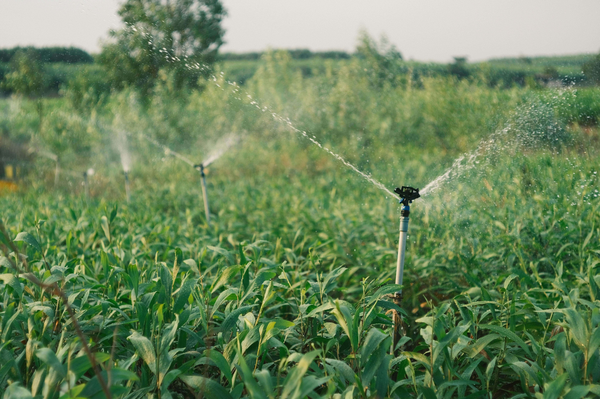
Sistemas modernos de irrigação por gotejamento e sensores reduzem o consumo de água em até 35% sem perda de produtividade. (Embrapa / Valley, 2026)
até 35% menos água consumida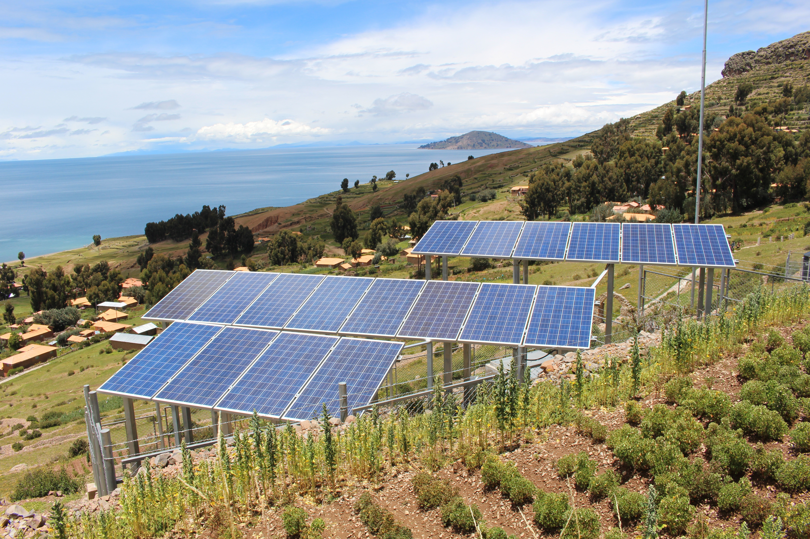
Produtores rurais geram cerca de 3,8 GW de energia solar distribuída no Brasil, reduzindo custos e emissões de carbono no campo. (ABSOLAR, 2025)
3,8 GW gerados no campo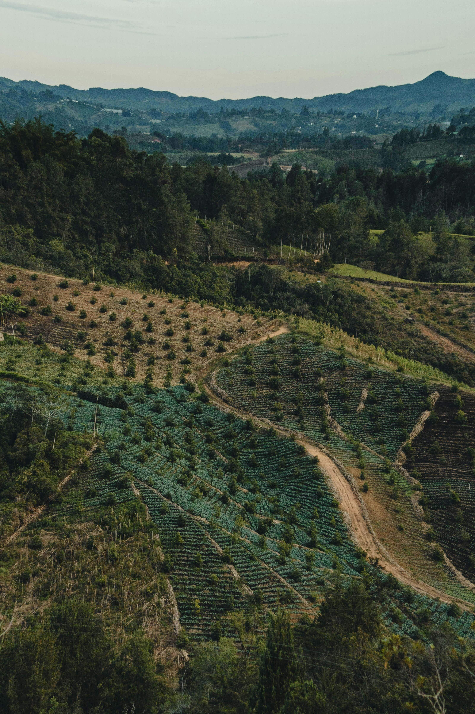
O Brasil tem 20,4 milhões de hectares em recuperação florestal. A meta do Planaveg é restaurar 12 milhões de hectares até 2030. (Observatório da Restauração, 2024)
20,4 mi ha em recuperação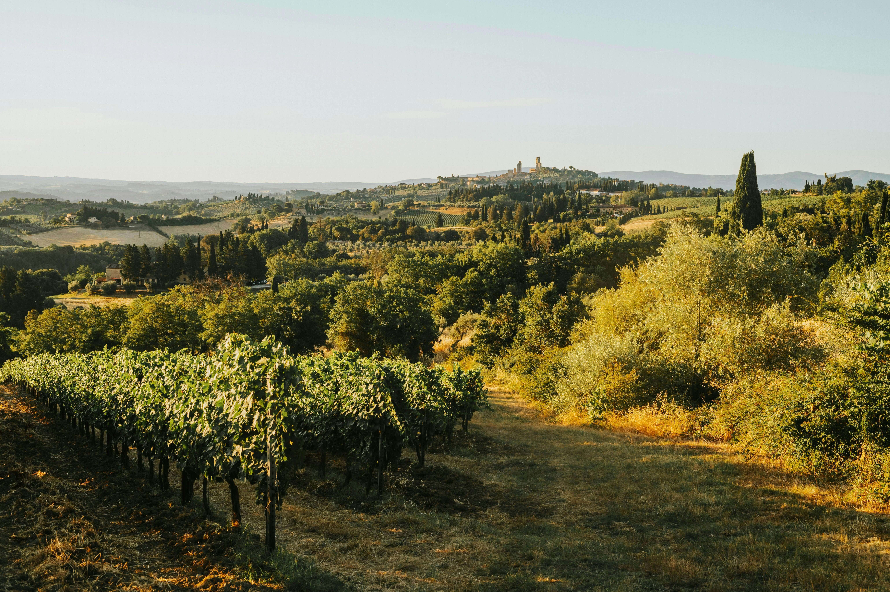
" Não herdamos a terra de nossos pais — nós a pedimos emprestada dos nossos filhos. — Provérbio Indígena
de grãos na safra 2024/25 — recorde histórico (CONAB, 2025)
de economia de água com irrigação inteligente (Embrapa / Valley, 2026)
gerados por produtores rurais no Brasil via energia solar (ABSOLAR, 2025)
em processo de recuperação florestal no Brasil (Observatório da Restauração, 2024)
Adoção em massa de técnicas que preservam o solo e reduzem erosão
GPS, sensores e drones chegam ao campo brasileiro
Fazendas tornam-se geradoras de energia limpa
IA, IoT e biotecnologia redesenham o futuro do campo
Meta de neutralidade climática assumida pelo Brasil no Acordo de Paris
¹ Participação do agronegócio no PIB: Cepea/CNA, 2025 | ² Produção de grãos: CONAB, 11º Levantamento Safra 2024/25 | ³ Neutralidade climática: Acordo de Paris, compromisso do Brasil | Irrigação: Embrapa/Valley, Agrishow 2026 | Solar: ABSOLAR, 2025 | Reflorestamento: Observatório da Restauração/Abiove, 2024
Responda 5 perguntas sobre o agro sustentável e descubra seu nível de consciência ambiental!
Clique nas fotos para ampliar e conhecer mais sobre o campo brasileiro.
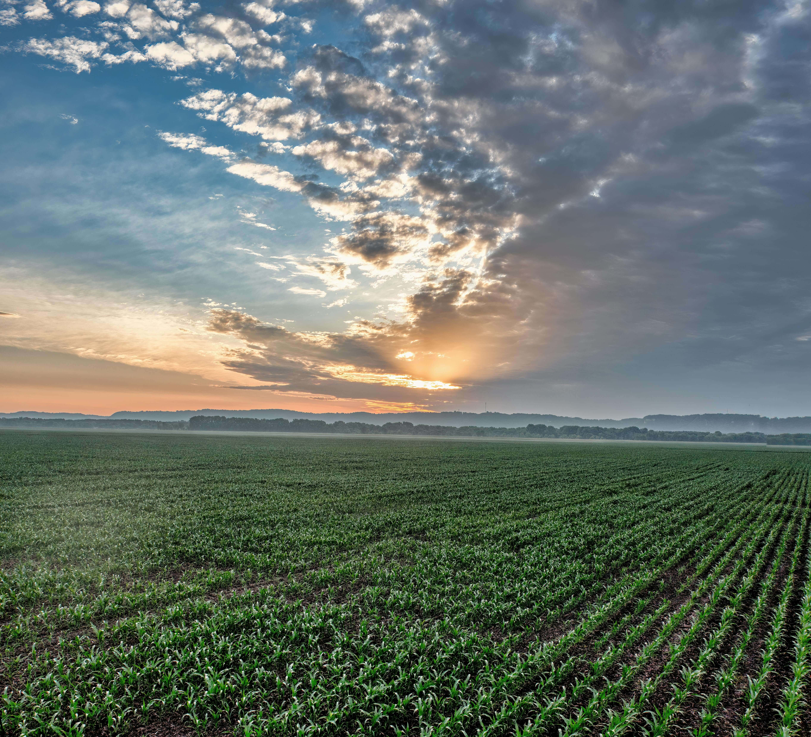
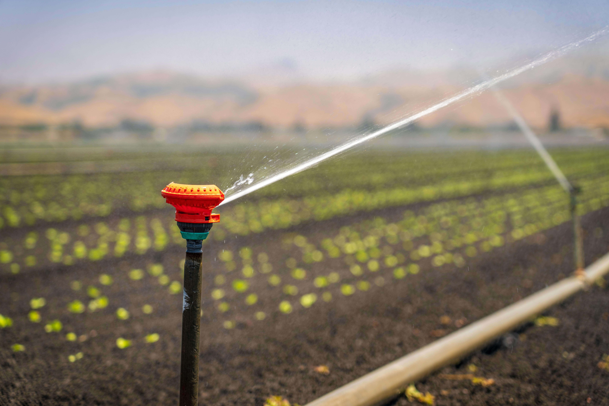
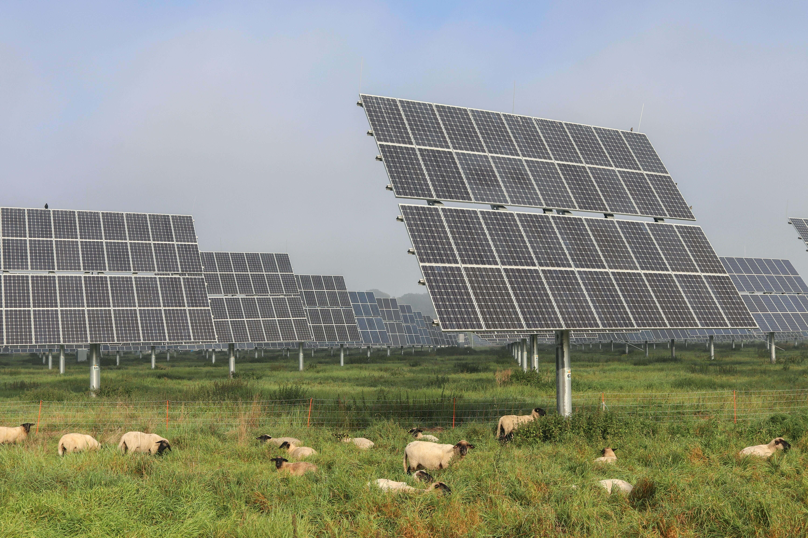
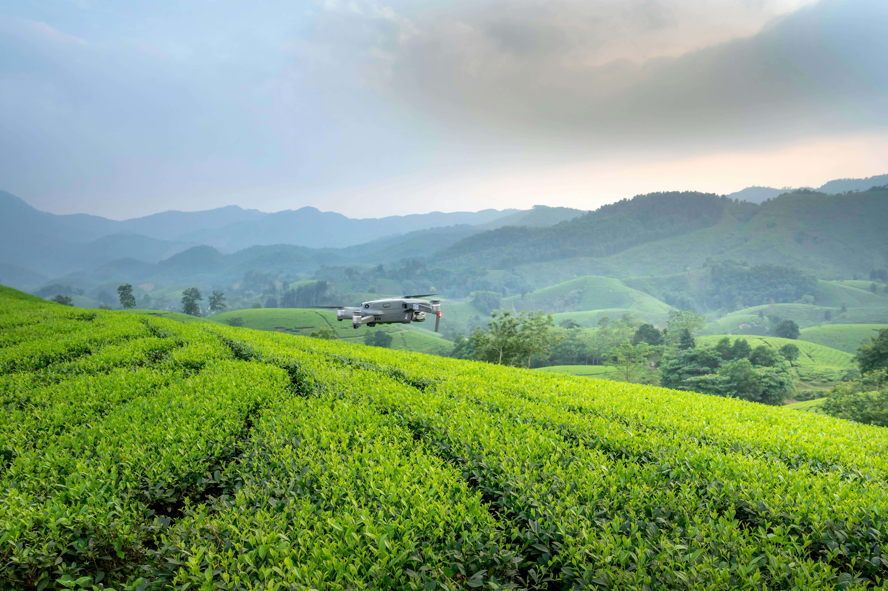
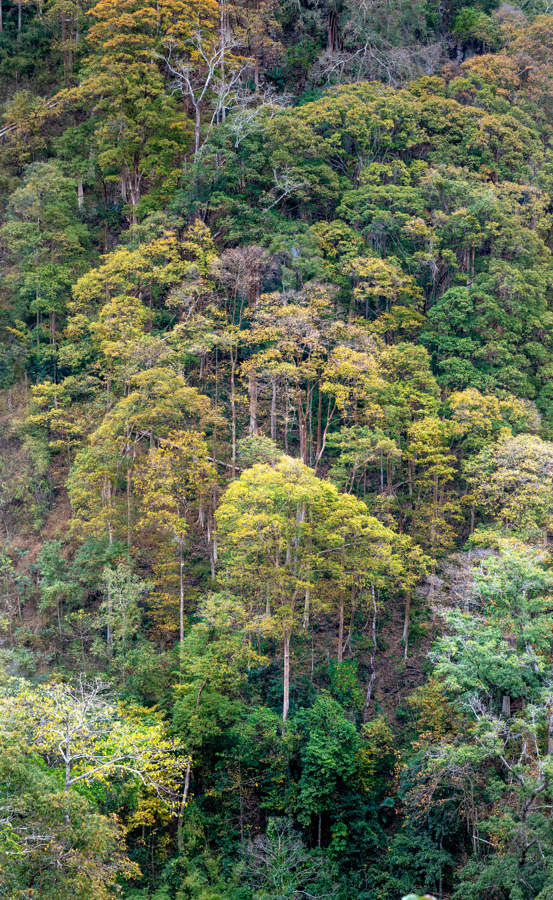
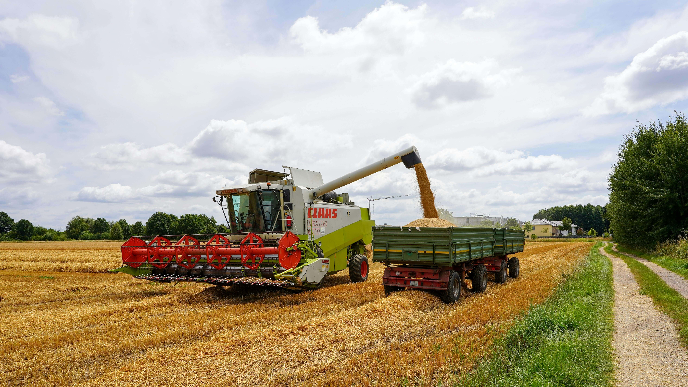
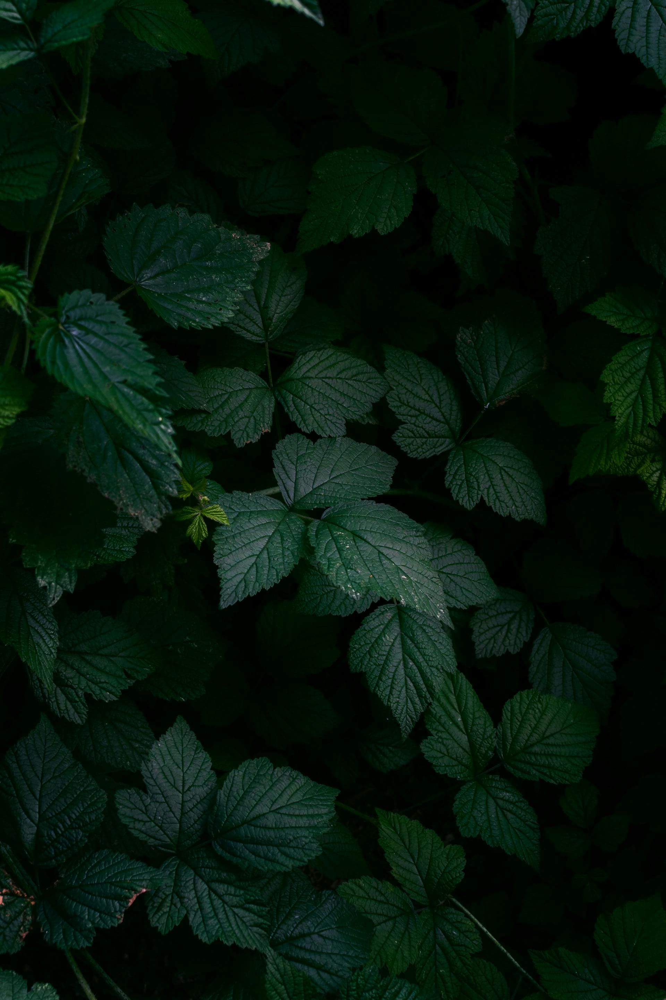
Assine nossa newsletter e receba novidades sobre sustentabilidade, tecnologia agrícola e o Agrinho 2026.